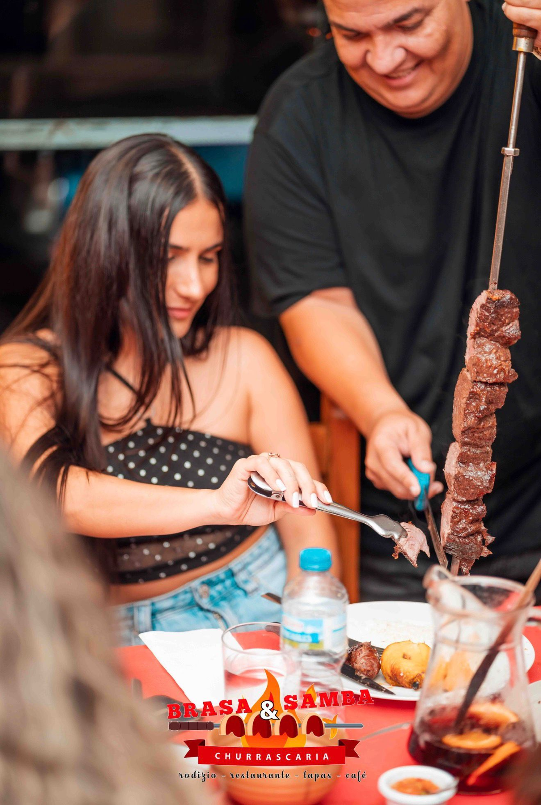

Más que un restaurante, una experiencia
Brasa y Samba nació del sueño de traer la auténtica experiencia de la churrascaria brasileña al corazón de Valencia. En el barrio de Benimaclet, hemos creado un rincón de Brasil donde cada detalle está pensado para transportarte a la alegría y el sabor de nuestro país.
Nuestro equipo pone toda su pasión y conocimiento en cada corte de carne, cada acompañamiento y cada sonrisa. Aquí no solo servimos comida — servimos tradición, cultura y hospitalidad brasileña.
Desde el primer día, nuestro objetivo ha sido claro: ofrecer la mejor carne a la brasa de Valencia, con un servicio cercano y un ambiente que te haga sentir como en casa.

Una tradición brasileña en tu mesa
El rodízio es una tradición brasileña que nació con la costumbre de asar carne al espeto sobre las brasas y compartirla entre todos. Hoy, esta tradición se vive en las churrascarias: los maestros parrilleros pasan por tu mesa con espetos de distintas carnes recién asadas, cortándolas directamente en tu plato.
Tú decides cuánto comer — no hay límite. Es una celebración de generosidad, sabor y convivencia. Y en Brasa y Samba, lo vivimos cada día con la misma pasión.
Empieza con nuestro buffet de acompañamientos: arroz, frijoles, farofa, ensaladas, vinagreta y más.
Nuestros parrilleros traen las carnes recién asadas a tu mesa. Picanha, maminha, costillas... tú eliges.
Come todo lo que quieras. Repite tantas veces como desees. El rodízio es ilimitado hasta que tú digas basta.
En el corazón de Benimaclet
Calle d'Utiel, 3, Bajo A — 46020 Valencia
Metro Benimaclet (Línea 3) — A 5 minutos caminando
Cómo Llegar